Function, structure, operation of driveline, axle (All models)
1. Function, structure, operation of driveline, axle
Propeller shaft
Note
- Rear propeller shaft (2WD model)
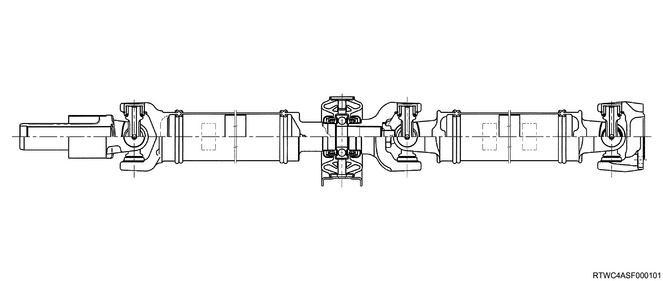
Note
- Rear propeller shaft (4WD model)
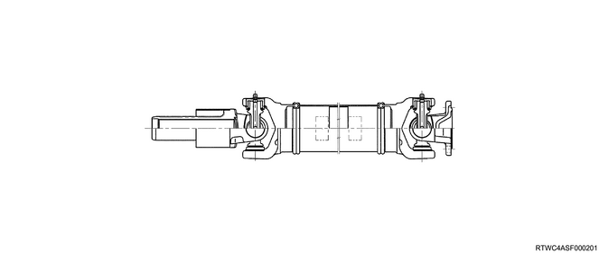
Note
- Front propeller shaft
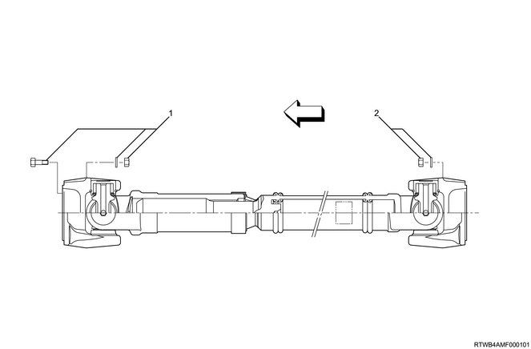
- Bolt, nut, washer, front axle side
- Nut, washer, transfer side
The torque is transmitted from the transmission passing through the propeller shaft and universal joint assembled section to the axle. All propeller shafts have a balanced cylindrical shape. Some of the slip joints installed on the drive line are spline-shaped. The propeller shafts are precisely made to be entirely balanced, and welding and other modifications are inhibited. Make alignment marks on individual propeller shafts before removing them.
Caution
- To avoid injuries, confirm that the engine is stopped, the vehicle is still, and the brake is engaged to maintain the vehicle in the secured and safe condition.
- Be aware that applying too much force with a vise results in deformation of the propeller shaft.
Phasing
The propeller shaft is designed to be assembled with the yoke rug (ears). Due to this design, the smooth shaft movement called phasing is achieved. Vibrations are caused by asynchronous movements of the propeller shaft. The propeller shaft lowers every time the universal joint rotates. This vibration is likened to the example of looking at the "waves" created by a person whipping a rope vertically moves to the end of the rope. The propeller shaft in the synchronous movements is likened to the example of looking at the "waves" created with two people by holding each end of a rope and whipping it vertically at the same time crash and offset each other. This phenomenon is the same as the universal joint on the propeller shaft. Completely canceling out the vibrations produces a smooth flow of power in the drive line. To assure the correct installation position, it is important to make alignment marks when removing the propeller shaft.
Universal joint
A universal joint consists of 2 Y-shaped yokes that are connected by a spider.
This spider is cross-shaped. The universal joint is designed to handle various loads and effects of the front or rear axle windup during acceleration. Within the designed angle range, the universal joint operates effectively and safely.
The bearing used in the universal joint is a needle roller type. The needle roller is retained on the trunnion by a round bearing cup. The bearing cup is retained in the yoke by a snap ring.
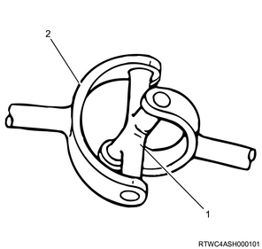
- Spider
- Y-shape yoke
Rear axle
The rear axle assembly is a semi-floating type, so the vehicle weight is applied to the axle housing.
The center line of the pinion gear is located lower than the center line of the ring gear (hypoid gear).
All components required to transmit the power from the propeller shaft to the rear wheels are stored in the BANJO-shaped axle housing.
The φ220 mm (8.66 in) ring gear rear axle uses a conventional set of a ring gear and a pinion gear to transmit the engine driving force to the rear wheels. This gear set transmits the driving force from the propeller shaft to the drive shaft at a 90 degree angle.
The axle shaft is supported with the wheel end of the shaft by a double taper roller bearing. This pinion gear is supported by 2 taper roller bearings. The depth of the pinion is determined by the end of the pinion gear and the shim pack located between the roller bearings pressed on the pinion. The pinion bearing preload is set by compressing a collapsible type spacer between the bearings in the axle housing.
The ring gear is held on the differential cage with 12 bolts.
The differential cage is supported by 2 taper roller bearings in the axle housing. The differential gear and the ring gear are installed in relation to the pinion with the selected shim and the spacer between the bearing and the differential cage. To move the ring gear, remove the shims from one side, and add the same amount to the other side. These shims are used to preload the bearing, and they are compressed on the differential cage. 2 bearing caps are used to retain the differential in the rear axle housing.
This differential is used to rotate the wheel at different speed while the rear axle continues transmitting the driving force. This prevents tire abrasion when cornering and premature wear on the internal axle parts.
This rear axle is sealed by pinion seals located at the end of each axle shaft with liquid gasket between the differential carrier and the axle housing.
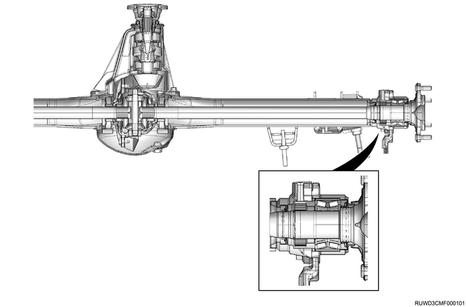
Front drive axle
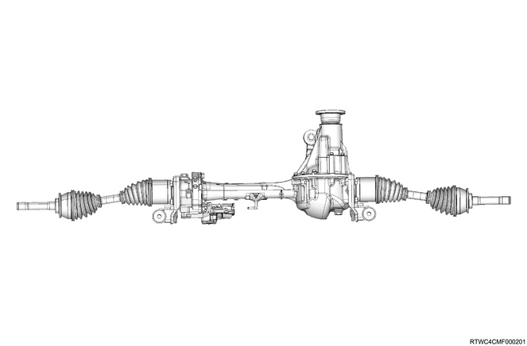
Transfer
The transfer case is used to transmit the power flow to the front axle. The transfer case also provides means to cut off transmission of the power to the front axle, and achieves improvement in fuel economy and quieter driving when the vehicle is running on a reformed road that does not require 4-wheel drive. Furthermore, the transfer case provides additional gear reduction when the gear is placed in the low range. This is useful in an encounter with a difficult off-road situation.
To select a drive range, use the 4WD switch on the center cluster panel or center console. When 4WD is selected, the 4WD indicator light illuminates.
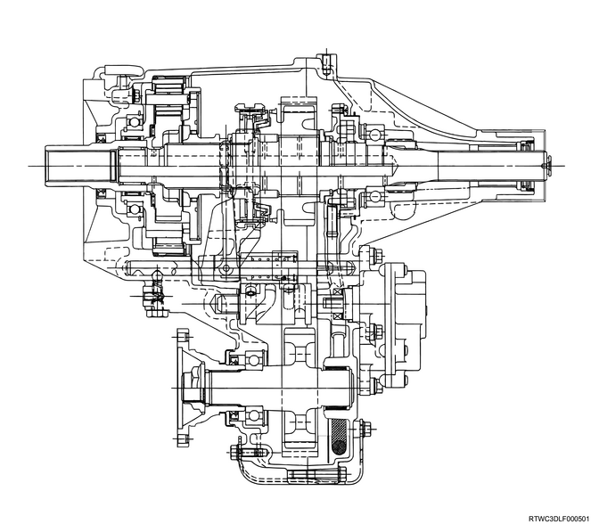
Transfer case control system
The transfer case control system switches between 2-wheel drive and 4-wheel drive. Furthermore, there are 2 modes of high and low prepared for 4-wheel drive, and either of the modes can be chosen depending on the driving conditions. It is equipped with a shift-on-the-fly system, and switching between 2-wheel drive and 4-wheel drive can be performed even while driving.
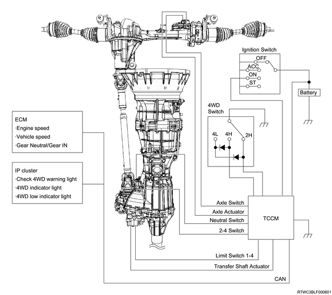
Note
- Transfer case
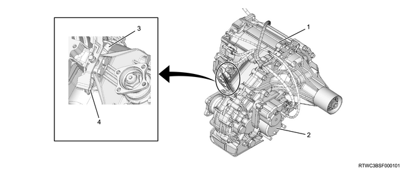
- Transfer case
- Transfer shift actuator
- 2-4 switch
- Neutral switch
Shift-on-the-fly system
The shift-on-the-fly system activates the axle actuator with electric signals from the TCCM when the driver switches the 4WD switch between 2-wheel and 4-wheel drive modes. The axle actuator connects and blocks the power to the front axle.
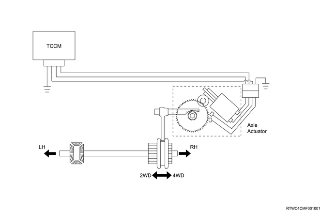
Note
- Axle actuator

TCCM
The TCCM is installed in the position of the following diagram, and controls the transfer case control system. The TCCM detects the 2H-4H-4L position of the 4WD switch operated by the driver, and activates the transfer shift actuator, the axle motor, and the indicator in the instrument panel cluster. On the other hand, the failsafe function is activated when an abnormality occurs in the system.
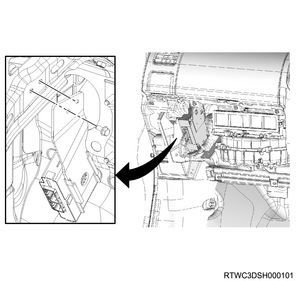
Note
- Circuit diagram
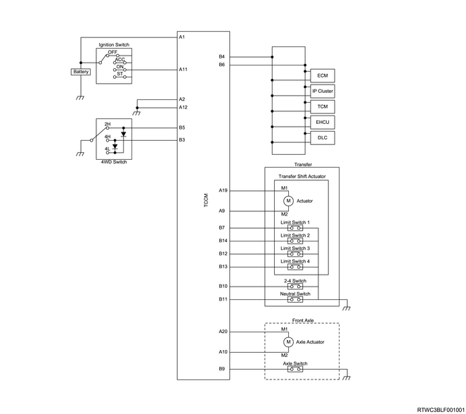
Note
- Pin alignment
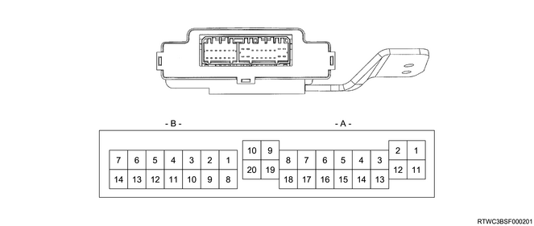
| No. | Signal name |
| A-1 | Battery power source |
| A-2 | Ground |
| A-3 | - |
| A-4 | - |
| A-5 | - |
| A-6 | - |
| A-7 | - |
| A-8 | - |
| A-9 | Transfer shift actuator drive B signal |
| A-10 | Axle actuator drive B signal |
| A-11 | Ignition power source |
| A-12 | Ground |
| A-13 | - |
| A-14 | - |
| A-15 | - |
| A-16 | - |
| A-17 | - |
| A-18 | - |
| A-19 | Transfer shift actuator drive A signal |
| A-20 | Axle actuator drive A signal |
| No. | Signal name |
| B-1 | - |
| B-2 | - |
| B-3 | 4WD switch - 4H signal |
| B-4 | CAN high |
| B-5 | 4WD switch - 2H signal |
| B-6 | CAN low |
| B-7 | Limit switch 1 signal |
| B-8 | - |
| B-9 | Axle switch signal |
| B-10 | 2-4 switch signal |
| B-11 | Transfer neutral switch signal |
| B-12 | Limit switch 3 signal |
| B-13 | Limit switch 4 signal |
| B-14 | Limit switch 2 signal |
Check 4WD warning light
The check 4WD warning light informs the driver of an abnormality in the transfer control system. The check 4WD warning light normally illuminates when the ignition switch is turned ON, and goes off after approx. 3 seconds. If the TCCM detects a DTC, it illuminates the check 4WD warning light.
Note
- Model without multi-information display
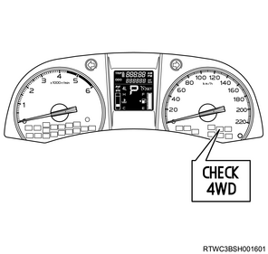
Note
- Model with multi-information display
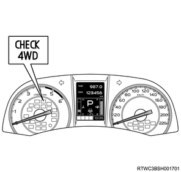
4WD indicator light
The 4WD indicator light illuminates when the 4WD switch is selected to the 4H or 4L position.
It flashes while the transfer shift actuator shifts from the 2H position to the 4H position. After the 4H position is selected, it changes to illuminated. It continues to illuminate during the transfer process from the 4H position to the 4L position.
If the desired position cannot be selected, the indicator light flashes rapidly and the warning buzzer sounds to inform the driver.
Note
- Model without multi-information display
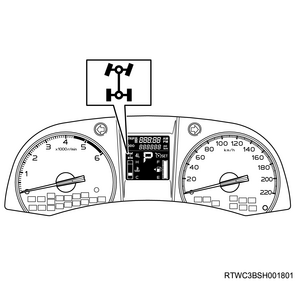
Note
- Model with multi-information display
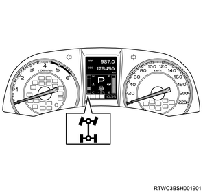
4WD low indicator light
The 4WD low indicator light illuminates when the 4WD switch is selected to the 4L position.
It flashes while the transfer shift actuator shifts from the 4H position to the 4L position. After the 4L position is selected, it changes to illuminated.
If the desired position cannot be selected, the indicator light flashes rapidly and the warning buzzer sounds to inform the driver.
Note
- Model without multi-information display
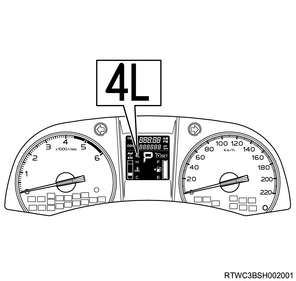
Note
- Model with multi-information display
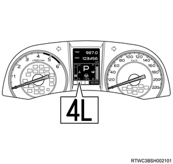
4WD switch
The 4WD switch is used by the driver for switching between 2H, 4H, and 4L.
Note
- Automatic transmission models
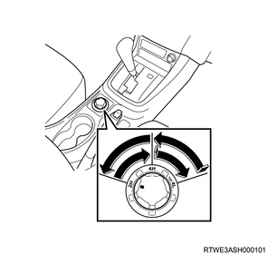
Note
- Manual transmission models
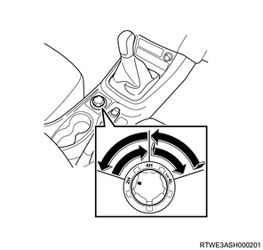
Note
- Pin alignment and circuit diagram
The 2H signal circuit turns ON when the 4WD switch is at the 2H position, and the TCCM recognizes that the 4WD switch is at the 2H position. The 4H signal circuit turns ON when the 4WD switch is at the 4H position, and the TCCM recognizes that the 4WD switch is at the 4H position. Both the 2H signal circuit and 4H signal circuit turn ON when the 4WD switch is at the 4L position, and the TCCM recognizes that the 4WD switch is at the 4L position.
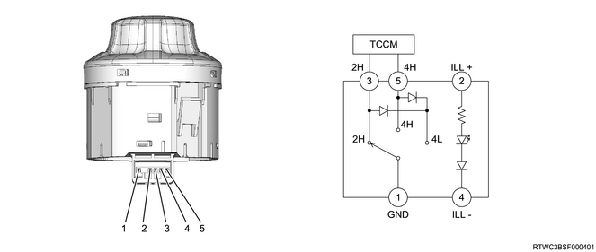
- Ground
- Illumination (Power supply)
- 2H signal
- Illumination (Ground)
- 4H signal
Transfer shift actuator
The transfer shift actuator is installed in the transfer case, and changeovers between 2-wheel and 4-wheel drives and between high and low are conducted by a single actuator. The actuator is connected with the shift drum. When the shift drum rotates, the guide roller fixed on each shift rod moves along the groove on the shift drum. Therefore, each shift rod moves to the predetermined position when the shift drum rotates, and the transfer state is changed.
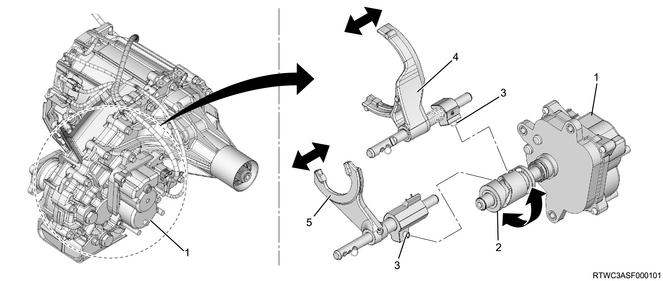
- Transfer shift actuator
- Shift drum
- Guide roller
- 2WD - 4WD arm and shift rod assembly
- High - low arm and shift rod assembly
Note
- Pin alignment
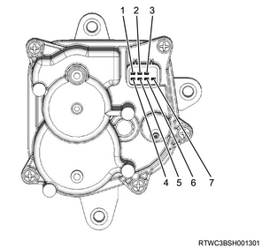
| No. | Signal name |
| B-1 | Limit switch 2 |
| B-2 | Motor 2 |
| B-3 | Motor 1 |
| B-4 | Ground |
| B-5 | Limit switch 3 |
| B-6 | Limit switch 4 |
| B-7 | Limit switch 1 |
There are limit switches 1 to 4 installed in the transfer shift actuator, and the "ON/OFF" operations are performed when they are in contact/non-contact with the metal surface attached to the gear. The current transfer switching status is recognized by the TCCM based on the combinations of the limit switches 1 to 4.
| 2H | 2H - 4H | 4H | 4H - Neutral | Neutral | Neutral - 4L | 4L | |||||
| Limit switch 1 | ON | ON | OFF | OFF | OFF | OFF | OFF | OFF | OFF | ON | ON |
| Limit switch 2 | OFF | ON | OFF | ON | ON | OFF | OFF | ON | ON | ON | ON |
| Limit switch 3 | ON | ON | ON | ON | ON | ON | OFF | OFF | OFF | OFF | OFF |
| Limit switch 4 | OFF | OFF | OFF | OFF | ON | ON | ON | ON | OFF | OFF | ON |
Note
- For example, 2WD recognition range
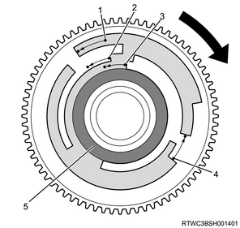
- Limit switch 1
- Limit switch 4
- Limit switch 3
- Limit switch 2
- Ground
Transfer components
A transfer consists of the following components.
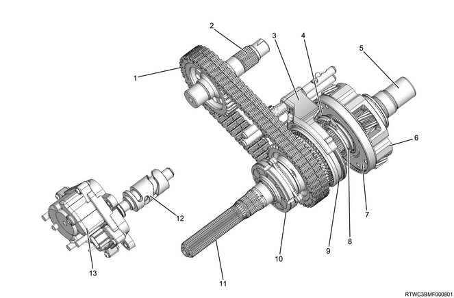
- Transfer chain
- Front output shaft
- 2WD - 4WD arm and shift rod assembly
- High - low arm and shift rod assembly
- Sun gear input shaft
- Carrier and gear assembly
- Planetary dogteeth
- High - low sleeve
- 2WD - 4WD sleeve
- Oil pump assembly
- Transfer main shaft
- Shift drum
- Transfer shift actuator
Power transmission
Depending on the position of the 4WD switch, the power is transmitted as follows at the transfer.
Note
- 4WD switch - 2H
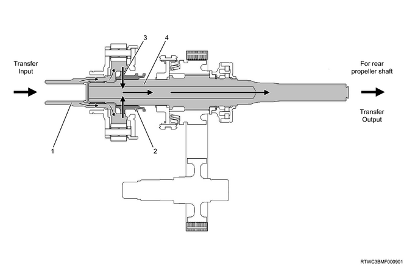
- Sun gear input shaft
- High - low sleeve
- Constant velocity
- Transfer main shaft
Note
- 4WD switch - 4H
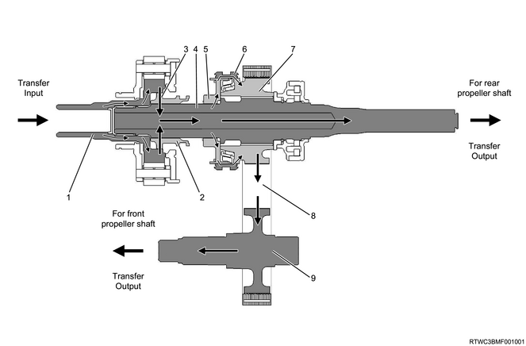
- Sun gear input shaft
- High - low sleeve
- Constant velocity
- Transfer main shaft
- 2WD-4WD clutch hub
- 2WD - 4WD sleeve
- Drive sprocket
- Transfer chain
- Front output shaft
Note
- 4WD switch - 4L
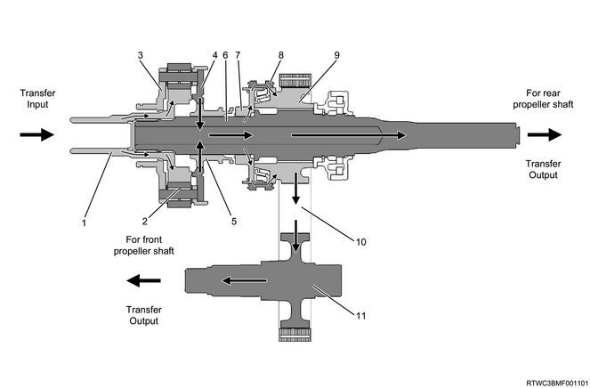
- Sun gear input shaft
- Speed deceleration
- Carrier and gear assembly
- Planetary dogteeth
- High - low sleeve
- Transfer main shaft
- 2WD-4WD clutch hub
- 2WD - 4WD sleeve
- Drive sprocket
- Transfer chain
- Front output shaft